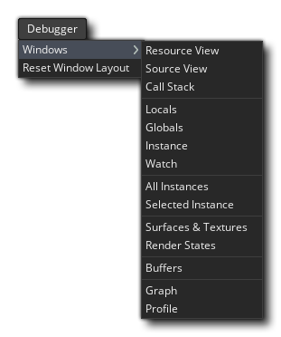
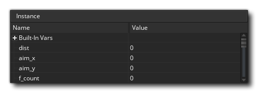
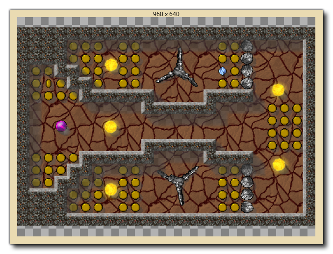
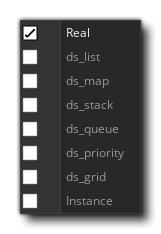
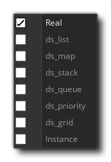

El Depurador es una poderosa herramienta para verificar tu juego, y es especialmente útil para rastrear errores y errores en tu código, así como para verificar que los guiones se ejecuten cuando deberían, y que las variables y matrices contengan los valores que esperas, etc... Puedes iniciar el Depurador ejecutando tu juego desde GameMaker Studio 2 IDE usando el botón Depurar  en la parte superior del IDE, o yendo al menú Generar y seleccionando "Depurar".
en la parte superior del IDE, o yendo al menú Generar y seleccionando "Depurar".
Cuando ejecutas un juego en modo de depuración, el IDE mostrará las diferentes herramientas disponibles para el depurador: 
La imagen que se muestra arriba muestra el diseño predeterminado para el depurador, pero al igual que con otros aspectos del IDE, puede personalizarlo para adaptarlo a sus necesidades, cerrando ventanas que no necesita o cambiando los tamaños de los documentos y ventanas que necesita. Puede restablecer el diseño del depurador en cualquier momento, o volver a abrir las ventanas cerradas, desde el menú contextual del depurador en la parte superior del IDE: 
A continuación explicamos para qué sirve cada sección del depurador:
La vista de Gráfico muestra una visualización gráfica de cómo su proyecto está utilizando la memoria y su tasa de fotogramas a lo largo del tiempo.:
El gráfico muestra el uso de la memoria actual y promedio, así como el FPS actual y promedio a lo largo del tiempo, y puede acercarse o alejarse usando el
/
junto con la rueda del mouse
, y si coloca el cursor del mouse sobre cualquiera de los elementos del gráfico, le mostrará el valor de ese elemento en el punto seleccionado.
La vista de Gráfico también mostrará ciertos eventos de depuración como puntos a lo largo de la longitud del gráfico. Estos eventos son generados automáticamente por GameMaker Studio 2 en ciertos puntos de la ejecución de un juego para mostrar eventos importantes específicos, pero también puede agregar sus propios elementos gráficos usando las funciones show_debug_message() y debug_event. Los eventos del sistema se marcarán en un color diferente a los eventos que se desencadenan a través del código:
Al ejecutar el juego de depuración y desplazamiento sobre estos eventos, se mostrará una lista de todos los eventos que se desencadenaron en ese punto del juego, y usted tiene la opción de sacar la lista en una ventana separada para revisar haciendo clic en Texto " Haga clic para abrir en una nueva ventana ":
La Vista de recursos muestra una lista de todos los recursos que se utilizan en el proyecto que pueden contener código o acciones de DnD™. Esta sección funciona de manera muy parecida al Árbol de recursos y puede expandir los elementos para mostrar más información, por ejemplo, los diferentes eventos para un objeto específico. Puede hacer doble clic
en cualquiera de los recursos para abrir el código en la ventana de Vista de Código, donde puede verificar valores y agregar o eliminar puntos de interrupción.
Esta ventana mostrará la pila de eventos de llamadas actual, así como el número de línea para el código que se está pasando. El depurador deberá haberse detenido antes de que se muestre ninguna información aquí.
La barra de herramientas tiene los controles del depurador junto con información básica como el uso de la memoria, el FPS actual (real) del juego y un indicador para mostrar si el depurador está actualmente conectado o no (el indicador estará verde cuando esté conectado a una instancia en ejecución de su proyecto y rojo de lo contrario). Los controles disponibles son:
Esto inicia el juego nuevamente después de haber sido pausado (atajo de teclado) f5 ) Esto pausará (interrumpirá) el juego. Reinicia el juego. Detiene el juego. Entre en un bloque de código o script (atajo de teclado) f11 ) Paso sobre un bloque de código o script (atajo de teclado) f10 ) Salir de un bloque de código o script (método abreviado de teclado) + f11 )
Active o desactive las actualizaciones en tiempo real para la información de depuración (esto está desactivado por defecto). Los tres primeros botones se usan para controlar tu juego, permitiéndote iniciar, pausar, reiniciar o detenerlo en cualquier momento. Cuando el juego está en pausa, ya sea haciendo clic en el botón Pausa o desde un Punto de interrupción, puede utilizar los tres botones de "paso" para recorrer su código. Esto simplemente significa que puedes decirle a tu juego que corra la línea de código actual, luego pasa al siguiente, permitiéndote recorrer toda tu partida una línea de código a la vez si lo deseas. Normalmente, usted simplemente usaría el botón de Paso a Paso para hacer esto, pero también tiene uno para pasar el código y otro para salir del código. Pasar por encima es útil cuando tiene scripts grandes para ejecutar, ya que al hacer clic se ejecutará todo el script o bloque de código como un solo paso y se detendrá en la siguiente línea, mientras que al salir se sacará de un script (se ejecutarán), pero todo de una vez) y se detiene en el próximo paso después cuando cambia el alcance. El ícono final permite que la ventana de depuración actualice sus datos en tiempo real, para que pueda ver cómo cambian las variables o las instancias se crean y destruyen a medida que ocurren. Tenga en cuenta que esto puede afectar el rendimiento del juego y que no toda la información está disponible en tiempo real. Por ejemplo, el reloj de estado de procesamiento (ver la sección de Relojes, a continuación) no se puede ver en tiempo real.
La vista de código es donde podemos ver y revisar diferentes scripts o código de evento de nuestro proyecto mientras se ejecuta. Por defecto, esto comienza en blanco, pero puede hacer doble clic
También puedes usar el botón derecho del mouse
para abrir el menú contextual, que también le permite agregar o eliminar puntos de interrupción y copiar cualquier código seleccionado en el portapapeles.
Más información sobre BreakPoints se puede encontrar más abajo en esta página.
La idea del depurador es permitirle "ver" cada detalle de su juego. Esto se hace usando "ventanas de observación" que, de manera predeterminada, se abren en la ventana de Salida acoplada en la parte inferior del IDE. Puede hacer clic en cada una de las pestañas para ver los relojes que contienen, algunos de los cuales se actualizarán en tiempo real (como los relojes Global), mientras que otros (como los relojes locales) requerirán que el depurador pausó el juego. Hemos enumerado cada una de las ventanas del reloj aquí por separado junto con una explicación de lo que hacen:
La ventana Locales muestra las propiedades del paso actual, que incluye el nombre del evento actual (o secuencia de comandos) que se está ejecutando, el desplazamiento en el código de máquina virtual para el script actual (el acrónimo "PC" es para "contador de programa"), instancia "propia" que ejecuta el bloque de código, y la "otra" instancia en el evento. Esta última parte solo es válida cuando el evento es un evento de colisión o hay un with usado en el código. Si la instancia está en colisión, "otro" mostrará la otra instancia (y sus variables) en la colisión, pero si es una with entonces la instancia "Self" se convierte en la que está ejecutando el código, mientras que "Other" es entonces la instancia que realmente contiene el with. En todos los demás momentos, "otro" simplemente mostrará los mismos datos que "Self". Después de toda esta información, encontrará una lista de todas las variables locales que están actualmente declaradas para el bloque de código que se está revisando. Si haces clic derecho
La ventana de Globals mostrará una lista de todas las variables globales actualmente declaradas y sus valores. Si haces clic derecho
Esta ventana es para que agregue una variable específica de la que desea realizar un seguimiento. Puede ser una variable de alcance global o de instancia, una variable incorporada o incluso una matriz o estructura de datos. Si el código de instancia que se muestra tiene la variable de vigilancia, se mostrará aquí, lo que significa que puede realizar un seguimiento de un valor sin tener que buscarlo en las ventanas Locales o Globales. Si haces clic derecho

Como su nombre lo indica, esta ventana mostrará todas las variables de instancia, variables locales y variables integradas asociadas con la instancia que se está examinando en la ventana Fuente (si se hace referencia a una instancia con la palabra clave "otro" o la with declaración, entonces esta ventana mostrará las propiedades de instancias en su lugar).
Si necesita ver todas las instancias que se encuentran actualmente en la sala, puede seleccionar esta ventana y aparecerán en la lista. También puede ver el estado de cualquier variable integrada o de instancia que tengan, y puede hacer clic con el botón derecho
Esta ventana es para cuando seleccionas una instancia de tu juego. Esto se hace simplemente pausando el juego y luego haciendo clic en cualquier instancia visible dentro de la ventana del juego. La instancia que se encuentra debajo del cursor del mouse tendrá su información en la ventana Instancia seleccionada, donde puede ver que está incorporada y las variables de instancia, al igual que para la ventana Instancias.
Este reloj muestra toda la información disponible para el estado del fotograma actual que se está procesando, como el dibujo alfa o el color de relleno. Esto no se puede actualizar en tiempo real, por lo que deberá pausar el juego para obtener y actualizar los detalles del marco.
Este reloj te permite ver exactamente qué se dibuja en las superficies que tienes en tu juego (incluido el application surface ), así como ver las páginas de textura que están en la memoria. Puede seleccionar texturas o superficies desde la parte inferior del reloj, y luego pasar el mouse sobre la textura o ID de superficie para que se muestre en una ventana emergente. 
Tenga en cuenta que el depurador debe estar en pausa antes de que se actualicen.
Esta ventana es donde puedes ver el perfil actual del sistema del juego que se está probando, donde puedes verificar todo en tu juego, desde eventos completos hasta llamadas a funciones individuales para ver cómo se están desempeñando y detectar cualquier zona problemática o cuellos de botella. Para obtener más información sobre el perfil, consulte la sección más abajo en esta página.
Si has inicializado cualquier buffers en tu juego, esta ventana te mostrará los datos del buffer. Puede seleccionar cualquier búfer creado estableciendo el valor de ID del búfer, que comenzará en 0 para el primer búfer creado en su juego, e incrementará en 1 para cada búfer consecutivo.
Si haces clic derecho


Es importante tener en cuenta que, mientras el juego se está ejecutando, no actualiza las ventanas de depuración con valores variables y otros detalles de forma predeterminada, por lo tanto, primero debe usar el botón Pausa.  en el Depurador para pausar el juego antes de que Locals, Globals y otros datos estén disponibles, o habilite la actualización en tiempo real desde los iconos en la parte superior . La única excepción a esta regla es la vista de Perfil, que se actualiza en tiempo real cuando se habilita independientemente del interruptor en tiempo real, ya que tiene su propio botón de encendido / apagado.
en el Depurador para pausar el juego antes de que Locals, Globals y otros datos estén disponibles, o habilite la actualización en tiempo real desde los iconos en la parte superior . La única excepción a esta regla es la vista de Perfil, que se actualiza en tiempo real cuando se habilita independientemente del interruptor en tiempo real, ya que tiene su propio botón de encendido / apagado.
Tipos de datos
Cuando mira una variable en cualquiera de las ventanas, puede ser uno de múltiples tipos de datos. Sin embargo, debido a la forma en que GameMaker Studio 2 almacena ciertas cosas, el depurador no siempre sabe exactamente qué contiene la variable. Esto se debe a que los valores de ID internos para estructuras de datos o instancias son enteros, por lo que el Depurador no siempre sabe si el valor entero que se almacena en una variable es para una estructura de datos o una instancia o simplemente es un valor entero. Por ese motivo, puede hacer clic con el botón derecho  en cualquier valor de variable y obtener una ventana emergente que enumera los tipos de datos disponibles que esta variable podría ser. 
en cualquier valor de variable y obtener una ventana emergente que enumera los tipos de datos disponibles que esta variable podría ser. 
Las cadenas y matrices no permiten esta opción, y vale la pena señalar que incluso si una estructura de datos está almacenada en una variable de instancia, su número de ID es global, por lo que si tiene cuatro instancias y cada una crea una ds_list (por ejemplo), cada lista tendrá una ID de 0 a 3, y no todas serán 0.
Una vez que haya seleccionado su tipo de datos, la variable mostrará las entradas en la estructura simplemente haciendo clic en el pequeño  al lado de su nombre. Esto ampliará el contenido de las estructuras y, en el caso de la ventana "Relojes", le permitirá modificarlas también.
al lado de su nombre. Esto ampliará el contenido de las estructuras y, en el caso de la ventana "Relojes", le permitirá modificarlas también.
Puntos de ruptura
Un punto de interrupción es un lugar en el código de su proyecto que desea que se detenga para que pueda ver lo que está sucediendo. Con el depurador ejecutándose, puede agregar o eliminar puntos de interrupción en cualquier momento y en cualquier código o bloque de secuencia de comandos al hacer clic izquierdo  en la cuneta (donde están los números de línea), o puede usar el botón derecho del mouse
en la cuneta (donde están los números de línea), o puede usar el botón derecho del mouse  para abrir el menú contextual, que también le permite agregar o eliminar puntos de interrupción:
para abrir el menú contextual, que también le permite agregar o eliminar puntos de interrupción:

Los puntos de interrupción también se pueden establecer desde GameMaker Studio 2 IDE. Al escribir su proyecto, se pueden agregar o eliminar en cualquier momento usando f9 (o usando el botón derecho del mouse  y seleccionando "alternar punto de interrupción"), ya sea en una acción en la ventana del objeto, o en una línea en una ventana del editor de código. Ahora, cuando ejecutas tu juego en modo de depuración, se detendrá en el punto (o puntos) que hayas definido. Los puntos de ruptura configurados desde el IDE se guardan junto con su proyecto y persistirán en varias ejecuciones hasta que se eliminen nuevamente; sin embargo, si agrega un punto de interrupción a su código en el depurador, se perderá después de que se cierre el módulo o se inicie una nueva prueba.. Tenga en cuenta que todos los puntos de interrupción aparecerán en la ventana de salida donde se pueden habilitar o deshabilitar o incluso eliminar.
y seleccionando "alternar punto de interrupción"), ya sea en una acción en la ventana del objeto, o en una línea en una ventana del editor de código. Ahora, cuando ejecutas tu juego en modo de depuración, se detendrá en el punto (o puntos) que hayas definido. Los puntos de ruptura configurados desde el IDE se guardan junto con su proyecto y persistirán en varias ejecuciones hasta que se eliminen nuevamente; sin embargo, si agrega un punto de interrupción a su código en el depurador, se perderá después de que se cierre el módulo o se inicie una nueva prueba.. Tenga en cuenta que todos los puntos de interrupción aparecerán en la ventana de salida donde se pueden habilitar o deshabilitar o incluso eliminar.
Perfilado
El Depurador le permite pasar por su código y encontrar cualquier problema con la base de código, pero a veces es necesario verificar los detalles más sutiles para optimizar adecuadamente sus juegos. La opción de Perfil ayuda a hacer justamente eso al brindarle una descripción general del rendimiento, que muestra el tiempo que toma llamar funciones, secuencias de comandos e incluso cuánto tiempo llevó completar un evento específico. 
Además de la ventana principal que muestra todos los eventos, scripts y funciones a los que se llama, también tiene las siguientes opciones para usar el Analizador:
Este es el botón para habilitar o deshabilitar el Analizador. Cuando está habilitado, el generador de perfiles se iniciará y comenzará a ver los eventos, scripts y funciones enumerados en la ventana principal junto con diferentes valores de datos para cada uno de ellos. Cómo se muestran estos datos dependerá de la Visualización de la hora y del Modo de visualización (ambos explicados más adelante en esta página).
Esta casilla de verificación le permite cambiar entre el tiempo promedio y el tiempo absoluto para el generador de perfiles. Cuando no está marcado, los valores que se muestran en la ventana principal serán el número total de llamadas realizadas a la función, secuencia de comandos o evento y el tiempo total empleado (los tiempos son en microsegundos ) a lo largo del perfil. Sin embargo, si habilita esto, estas columnas muestran el tiempo promedio que toma cada paso para cada función, secuencia de comandos o evento, y la cantidad promedio de veces que se llamó.
Este menú le permite elegir el modo de visualización, que puede ser Top Down o Bottom Up.
Seleccionar el modo de vista de arriba hacia abajo mostrará el perfil de arriba hacia abajo (más o menos lo mismo que la jerarquía de la escala de llamadas), por lo que mostrará el evento, luego el guión y luego todas las funciones utilizadas. Tenga en cuenta que puede hacer doble clic
Al seleccionar el modo de vista hacia abajo, se mostrarán las cosas de abajo hacia arriba para que pueda ver todas las funciones y las llamadas de secuencia de comandos de forma individual. Al usar este modo de vista, haciendo clic en
View Target le permite elegir entre ver el proyecto GML (datos de evento y código), el motor de fondo o ambos. Si eliges "GML", obtendrás los eventos, funciones y scripts en cada paso, mientras que la vista "Motor" solo mostrará las llamadas de motor requeridas por el proyecto, lo que te permitirá ver los cuellos de botella en la forma en que tu proyecto está manejando cosas Si selecciona "Ambos", se mostrarán ambos conjuntos de datos, pero tenga en cuenta que cuando se combinan con la vista "Abajo", las diferentes secuencias de comandos y funciones se anidarán dentro de las llamadas al motor y tendrá que hacer clic en
Los datos del perfil se muestran en cuatro columnas, y al hacer clic en cualquiera de ellos se ordenarán los datos según los criterios de la columna.

- Nombre: este es el nombre del evento, secuencia de comandos o función a la que se llama, y puede tener un a su lado para indicar otras llamadas hacia él o desde él (según el Modo de visualización que haya seleccionado). Puedes hacer doble clic en cualquiera de los nombres para que abra el bloque de código o la secuencia de comandos dentro de la ventana Fuente. Al hacer clic en la parte superior de esta columna, se ordenarán los nombres en orden alfabético.
- Tiempo - Esto mostrará el tiempo total que una función (o secuencia de comandos o evento) ha tomado durante el perfilado, o el tiempo promedio que ha tardado cada paso en llamarse (dependiendo de la opción de Visualización de tiempo seleccionada) y se muestra en microsegundos.
- Llamadas: aquí puede ver el número total de llamadas al evento, función o secuencia de comandos, o el número promedio de llamadas en un solo paso (nuevamente, dependiendo de la opción de Visualización de tiempo seleccionada).
- Paso% - El valor que se muestra aquí es el porcentaje general de un solo paso que ha realizado la llamada.
Puede exportar los datos de perfil en cualquier momento haciendo clic con el botón derecho  en la ventana y seleccionando la opción Exportar a archivo. Esto escribirá la vista actual (después de expandir todos los nodos) en .csv formato, que luego puede cargar en cualquier hoja de cálculo, como Excel, por ejemplo.
en la ventana y seleccionando la opción Exportar a archivo. Esto escribirá la vista actual (después de expandir todos los nodos) en .csv formato, que luego puede cargar en cualquier hoja de cálculo, como Excel, por ejemplo.